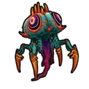

Xzyurnip
Familiar · Tier 16 · Nível 47
Você pensaria que magia o mantém flutuando, mas não. Parece que a própria gravidade não quer tocar esta criatura.
Atributos
Vida
163
Evasão
10%
Economia
Valor
40.150.000
Tempo de fabricação
5d 19h
XP do comerciante
615.000
Trabalhadores: Invocador 39, Feiticeiro 35, Sacerdotisa 32
Receita


Marcos do projeto
3
-125 Ervas
8
Tempo de fabricação -25%
14
Valor +25%
20
-16 Éter
30
Chance de qualidade +1